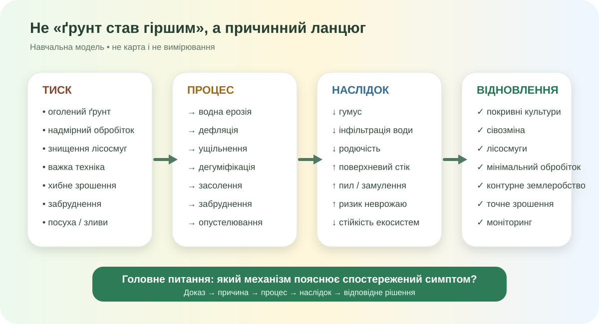

Що сталося з ґрунтом?

Реальне фото засоленого зрошуваного ґрунту, Wikimedia Commons, public domain. Це не Україна — фото потрібне для розпізнавання процесу.

Локальна навчальна схема. Не карта і не вимірювання.
Змініть умови — зміниться ризик
Умовний ризик водної ерозії: 20/100
Це причинна модель, не прогноз конкретного поля: більший похил + сильніша злива + менше рослинного покриву → більше поверхневого стоку та перенесення частинок.
Кейс А
Сухе розоране поле без решток, сильний вітер.
Кейс B
Після важкої техніки вода гірше просочується, на поверхні довше стоять калюжі.
Кейс C
Посушлива зона, зрошення, близькі мінералізовані води, сильне випаровування, слабкий дренаж.
Деградація ≠ тільки ерозія
Державна екологічна інспекція України у повідомленні від 17.06.2025 наводить оцінку: майже 20% території України схильні до процесів опустелювання, особливо південні та східні регіони.
Офіційна оцінка схильності території України до процесів опустелювання, ДЕІ, 2025.
Карта — це аргумент, якщо Ви її читаєте
- Знайдіть ділянки/регіони з вищим ризиком.
- Зіставте ризик із рельєфом і землекористуванням.
- Поясніть, чому тип ґрунту сам по собі не визначає результат.

Реальна ерозійна форма. Wikimedia Commons / USDA historical collection.

Південний чорнозем, степова зона України. Wikimedia Commons.

Реальний профіль ґрунту з Полтавської області, 2024. Wikimedia Commons.
Запорізька область: що доводять джерела?
Державна екологічна інспекція Південно-Західного округу у 2025 році назвала Запорізьку область серед південних регіонів, де посилюються процеси опустелювання. Серед причин: кліматичні зміни, надмірне землеробство, втрата лісосмуг та виснаження ґрунтів.
Називаємо механізми
Ерозія
Водна — змивання/розмивання стоком. Вітрова — видування й перенесення частинок. Рослинний покрив, лісосмуги й правильний обробіток знижують ризик.
Фізична деградація
Ущільнення й руйнування структури зменшують інфільтрацію води, погіршують аерацію та умови для коренів.
Хімічна деградація
Засолення, підкислення, забруднення, втрата органічної речовини й дисбаланс елементів живлення.
FAO: Stop soil erosion
Food and Agriculture Organization of the United Nations. Коротка анімація про механізм ерозії й способи її зменшення.
Відкрити на YouTubeРішення має бити по механізму
Наприклад, лісосмуга доречна для зменшення швидкості вітру; вона не є універсальним «лікуванням ґрунту».
Спершу ПІБ і клас
Заповніть прізвище, ім’я та клас — тоді тест стане активним.
Фінальний доказовий висновок
Чому втрата рослинного покриву може прискорити деградацію ґрунту навіть без зменшення кількості опадів?
Міні-аудит своєї місцевості
- Повторіть у електронному підручнику тему про охорону ґрунтів.
- Оберіть одну проблему своєї області: ерозія, ущільнення, засолення, забруднення або опустелювання.
- Знайдіть 2 надійні джерела і один картографічний/просторовий доказ.
- Складіть ланцюг: чинник → процес → ознака → наслідок → рішення.
Джерела уроку
Державна екологічна інспекція України (17.06.2025); ДЕІ Південно-Західного округу (27.10.2025); JRC/ESDAC; FAO; SoilGrids; ДУ «Інститут охорони ґрунтів України»; Wikimedia Commons. SVG-модель створена спеціально для уроку.